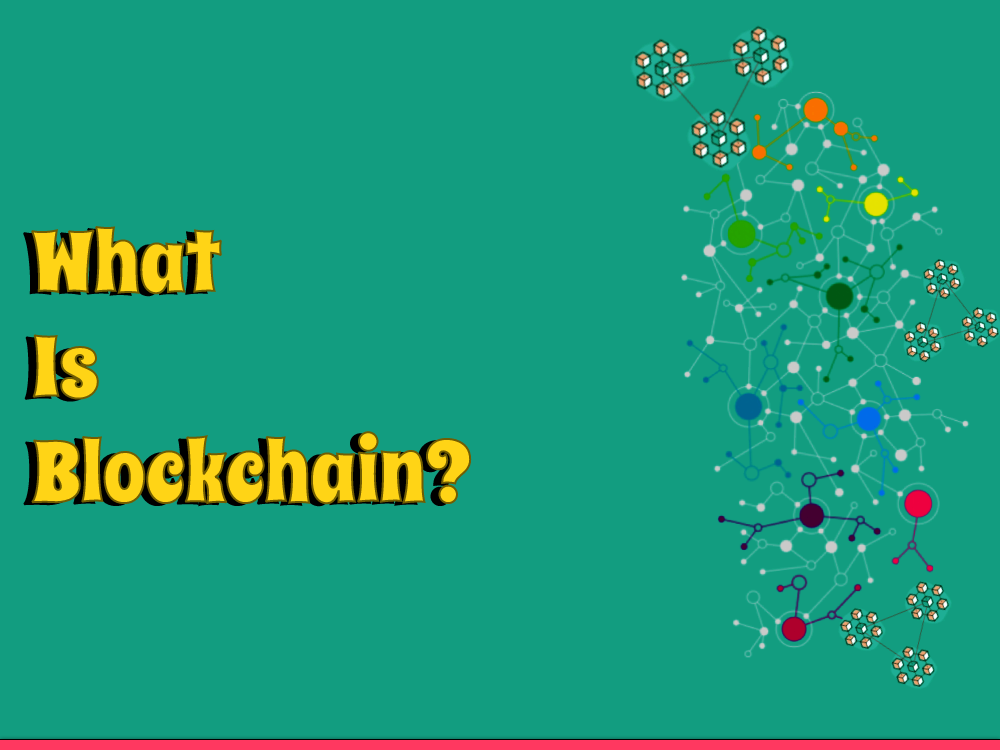

Blockchain development has been around starting around 2009, but it's at this point a to some degree groundbreaking thought for certain people. In this beginner's helper, we'll get a handle on what blockchain is, how it works, and why it's critical.
What is Blockchain?
Blockchain is a modernized record that records trades across a decentralized association of laptops. All things considered, an informational index's passed among various laptops as gone against on to being taken care of in one central region. Each block in the chain contains a record of trades, and when a block is added to the chain, it can't be changed.
What is a Blockchain in direct words?
In essential words, a blockchain is a modernized record of trades that is placed away on a decentralized association of computers. Each block in the chain contains a record of trades, and when a block is added to the chain, it can't be changed. This makes blockchain a strong and painstakingly planned procedure for taking care of and sharing data. Blockchains use advanced cryptography to ensure that the data is secure and essentially open to endorsed parties. The advancement might potentially change various endeavors, similar to cash, clinical consideration, and creation network the board, by growing straightforwardness, diminishing the necessity for delegates, and further creating security.
What are Blockchain examples?
Here is a guide to assist you with understanding how blockchain functions:
Suppose you need to move cash to a companion. You start the exchange by sending a solicitation to a blockchain network. The organization comprises of numerous hubs, every one of which stores a duplicate of the record.
The hubs on the organization then approve the exchange utilizing complex calculations. When the exchange is affirmed, it's additional to a block. Each block contains a one of a kind code, called a hash, which is produced utilizing the data from the past block. This makes a chain of blocks that is practically carefully designed.
The hash capability is irreversible, so even a little change in the information will bring about something else entirely. This guarantees that the information on the blockchain is secure and carefully designed.
This is only one illustration of how blockchain can be utilized for secure and straightforward exchanges. Blockchains have numerous likely applications in enterprises like money, medical services, and store network the board.
What is Blockchain utilized for?
Blockchain innovation is being utilized in different businesses for a scope of purposes. The absolute most normal use cases for blockchain include:
1: Cryptocurrencies
Maybe the most notable use case for blockchain is digital currencies, like Bitcoin and Ethereum. Blockchain innovation is utilized to make a decentralized record of exchanges that can be safely recorded and followed without the requirement for a concentrated delegate, like a bank.
2: Inventory network Management
Blockchain can be utilized to make a straightforward and secure inventory network the board framework. By utilizing blockchain, organizations can follow the development of merchandise from the provider to the client in a carefully designed way. This can assist with decreasing the gamble of misrepresentation and further develop store network proficiency.
3: Advanced Identity
Blockchain can be utilized to make a safe computerized character for people. By making a decentralized character framework, people can keep up with command over their own information and safeguard themselves against wholesale fraud.
4: Healthcare
Blockchain can be utilized to make a safe and effective medical care framework. By utilizing blockchain, clinical records can be safely divided among medical services suppliers, lessening the gamble of clinical blunders and working on understanding results.
5: Voting
Blockchain can be utilized to make a protected and straightforward democratic framework. By utilizing blockchain, votes can be safely recorded and counted without the gamble of altering or extortion.
These are only a couple of instances of the numerous potential use cases for blockchain innovation. As the innovation keeps on creating, almost certainly, we'll see much more imaginative purposes for blockchain arise.
What is Blockchain versus Cryptocurrency?
Blockchain and cryptographic money are connected however unmistakable ideas.
Blockchain is an innovation that takes into consideration the safe and decentralized stockpiling and sharing of information. A computerized record of exchanges is put away on an organization of PCs, and when a block is added to the chain, it can't be modified. Blockchain is utilized to make secure, straightforward, and carefully designed frameworks for a scope of utilizations past digital currencies.
Digital money, then again, is a computerized resource that utilizes cryptography to get exchanges and to control the formation of new units. Digital forms of money, as Bitcoin and Ethereum, are based on blockchain innovation, yet they are only one use of the innovation.
As such, blockchain is the fundamental innovation that empowers digital currencies to work, yet it has numerous other possible applications past cryptographic money. Blockchain can be utilized to make secure and straightforward frameworks for production network the executives, advanced personality, medical care, and that's only the tip of the iceberg. Digital currencies, then again, are only one illustration of how blockchain can be utilized to make a decentralized, secure, and straightforward framework for exchanges.
Who created Blockchain?
The idea of blockchain was first presented in 2008 by an obscure individual or gathering utilizing the alias "Nakamoto". In a paper named "Bitcoin: A Shared Electronic Money Framework", Nakamoto illustrated the plan and engineering of another decentralized computerized cash called Bitcoin, which depended on a blockchain.
While the genuine character of Satoshi Nakamoto stays a secret, their creation of blockchain and Bitcoin changed the manner in which we contemplate computerized exchanges and the potential for decentralized, shared frameworks. Starting from the presentation of blockchain, it has been utilized for various applications past digital currencies, and it can possibly change a scope of enterprises by making secure, straightforward, and sealed frameworks for information capacity and sharing.
Is Blockchain the future?
Blockchain innovation can possibly be a critical piece representing things to come of numerous ventures, and all things considered, we will see an ever increasing number of utilizations of the innovation before very long. The advantages of blockchain, like security, straightforwardness, and decentralization, make it an alluring answer for a scope of utilizations, from money to medical care to production network the board.
One of the critical benefits of blockchain is that it takes into consideration trust to be laid out between parties without the requirement for a concentrated go-between, like a bank or government. This implies that blockchain can possibly upset customary enterprises and set out new open doors for development.
Notwithstanding, similar to any new innovation, there are likewise difficulties and snags to survive. For instance, versatility and interoperability issues should be addressed to guarantee that blockchain can deal with enormous scope applications, and administrative systems should be created to guarantee that blockchain is utilized in a mindful and moral manner.
By and large, while it's difficult to foresee the future with sureness, obviously blockchain can possibly assume a critical part in forming the eventual fate of numerous ventures.
Why is it called Blockchain?
Blockchain is called so in light of the fact that a computerized record of records is coordinated in blocks, and these blocks are connected together in a chain-like construction. Each block contains a bunch of exchanges or records, and when another block is added to the chain, it is connected to the past block, shaping a ceaseless chain of blocks.
The blocks in the chain are connected together utilizing cryptography, which guarantees that once a block is added to the chain, it can't be modified or messed with. This makes blockchain a protected and straightforward approach to putting away and sharing information.
How Does Blockchain Work?
The way to understanding how blockchain functions is to initially comprehend how conventional information bases work. In a customary data set, information is put away in a focal area and can be modified by anybody who approaches it. Interestingly, blockchain is decentralized, implying that it's circulated among numerous PCs and every PC has a duplicate of the information base.
At the point when an exchange is made on the blockchain, it's confirmed by numerous PCs on the organization. When the exchange is confirmed, it's additional to a block, which is then added to the chain. Each block in the chain contains a novel code, called a hash, which is created utilizing complex calculations. When a block is added to the chain, the hash of the past block is remembered for the following block, making a chain of blocks that is for all intents and purposes sealed.
Why is Blockchain Important?
Blockchain has numerous possible applications, and it's as of now being utilized in enterprises like money, medical services, and store network the executives. The following are a couple of justifications for why blockchain is significant:
1: Security
Since blockchain is decentralized and each block is checked by numerous PCs, it's for all intents and purposes difficult to modify the information on the blockchain.
2: Transparency
Since every exchange is recorded on the blockchain, following the historical backdrop of a specific resource or transaction is simple.
3: Efficiency
Since blockchain kills the requirement for mediators, for example, banks or other monetary establishments, exchanges can be finished all the more rapidly and with lower expenses.
4: Innovation
Since blockchain is a moderately new innovation, there's still a ton of space for development and new applications.
Conclusion
Blockchain is a progressive innovation that can possibly change numerous businesses. While it's as yet a somewhat new idea, it's significant for any individual who needs to remain on the ball to comprehend the rudiments of how it functions. We trust this fledgling's aide has provided you with a superior comprehension of what blockchain is and why it's significant.
Thank you for reading, and stay tuned for more exciting insights into the world of blockchain and cryptocurrencies!